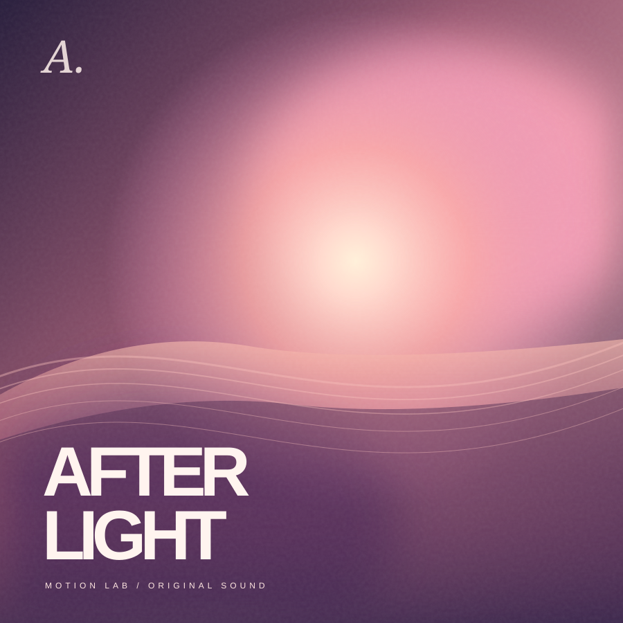

APPLE MOTION LAB
让声音
流动。
轻触播放，向上展开。每一次拖动，都连贯如初。
声音，仍在流动 ↗
今日声景
为一次触摸而作交互的细节
迷你播放器与全屏面板共享同一个 DOM。拖动时几何、圆角和内容同步变化；松手后的弹簧可以被再次握住。
Velocity handoffInterruptible springsRefractive optics
APPLE MOTION LAB — NOT AN APPLE PRODUCT
APPLE MOTION LAB
轻触播放，向上展开。每一次拖动，都连贯如初。
迷你播放器与全屏面板共享同一个 DOM。拖动时几何、圆角和内容同步变化；松手后的弹簧可以被再次握住。
